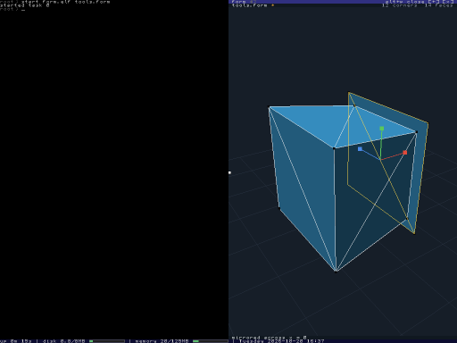

form
form shapes low-poly meshes for games made with
gnista, which draws them with djup.
a model starts as a cube, which grows by pulling its sides out and moving its
corners about. start form.elf ship.form opens one. a click on a .form file in hylla does too.
started with no name it is a new model, so F2 asks for one.
seeing
dragging turns the camera around the model and the wheel brings it nearer or further. faces are lit from above and behind the viewer, wherever the camera goes. the edges are drawn white and the corners black over them, only where they can be seen.
picking and moving
a click picks the corner under the pointer, or else the side, both triangles of a square. shift and a click adds to what is picked, or takes away from it. t switches to picking single triangles. three handles stand out from the middle of what is picked, red along x, green up and blue along z. dragging one moves everything picked along its axis, a sixteenth of a unit at a time.
- tab
- pick the next side.
- arrows
- move what is picked along the floor, while with shift they move it up and down. with nothing picked they turn the camera.
- e
- pull the picked sides out, with new sides joining them to where they were.
- 1 to 9, del
- colour the picked sides, or take them away.
- =, -
- what is picked a quarter bigger or a fifth smaller, around its own middle.
- m
- mirror the picked sides across x = 0, or the whole model when no side is picked.
- d
- a copy of the picked sides, or of the whole model, half a unit to the right on the screen. the copy is what is picked afterwards, to be moved on.
- g
- the picked corners, or all of them, onto the nearest sixteenth of a unit, the steps the handles move in, so a corner that = or - left off the grid meets its neighbours again.
- n
- a new cube where the camera looks.
- w
- turns the edges and corners on or off.
- ctrl-z, ctrl-y, F2
- undo, redo and save.
- alt-w
- quit. with unsaved changes it asks first, while a second alt-w quits without saving.
mirroring
most things worth modelling are the same on both sides, so only one half needs making. m adds a copy of the picked sides with every x turned to its negative. a mirror turns a face inside out, so each copy takes its corners in the other order and faces outwards again. a corner that lies on x = 0 is shared by both halves instead of copied, so a half built up to the middle comes out joined to its mirror image. the copy is what is picked afterwards, ready to be moved or coloured.
